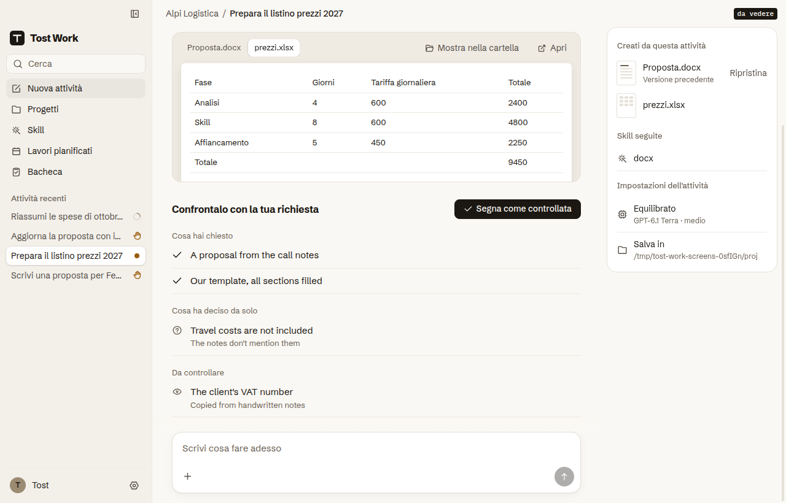

Il Microsoft Store chiede alle app che generano contenuti con l'AI un modo per segnalarli (regola 11.16). Le risposte non le scrive Tost Work ma l'AI dell'attività, quindi la segnalazione va a chi la fa: OpenAI per Codex, Anthropic per Claude Code. Qui il punto da cui si segnala; in alto puoi cambiare l'AI dell'attività. Clicca il pulsante sullo schermo per aprire la scheda.
